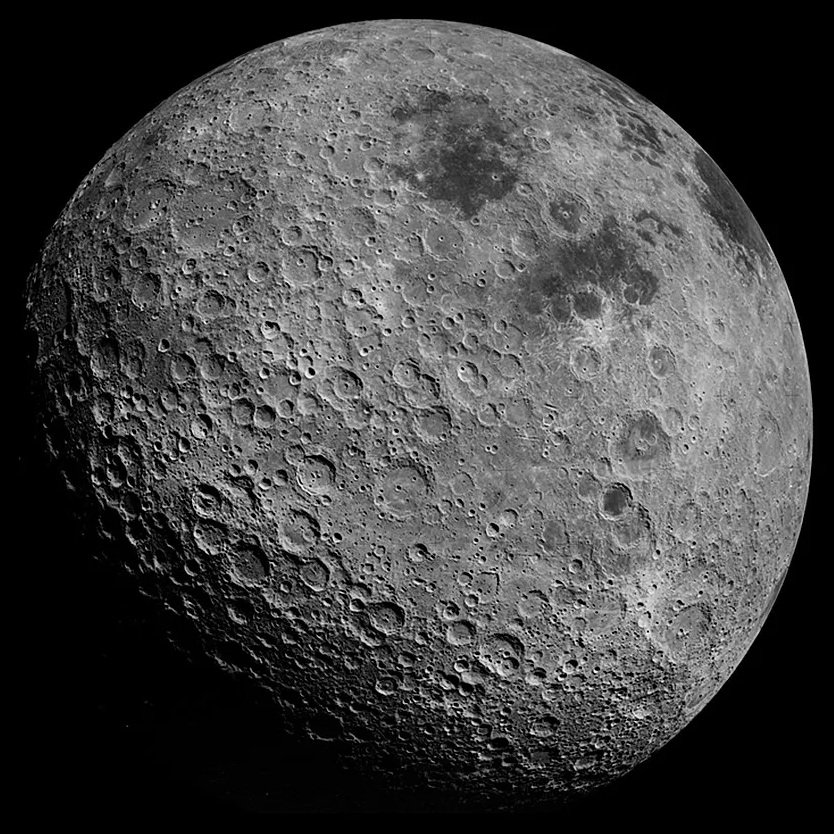
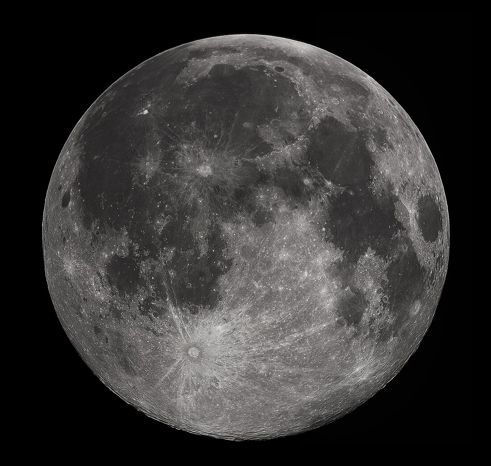
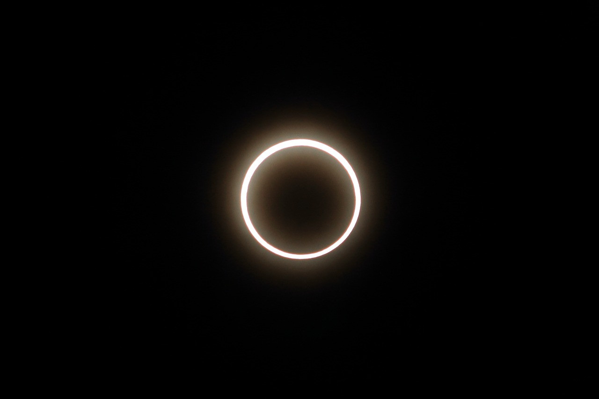
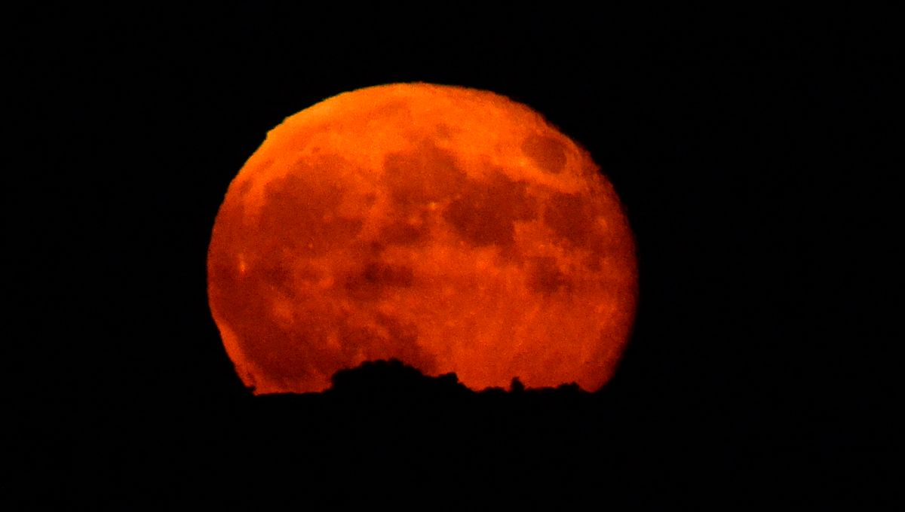

• Type : Satellite naturel
• Diamètre : 3 474 km (environ 1/4 de celui de la Terre)
• Distance de la Terre : 384 400 km en moyenne
• Durée d'une rotation : 27,3 jours (rotation synchrone)
• Durée d'une révolution : 27,3 jours
• Température : -173°C à 127°C (jour/nuit)
• Atmosphère : Quasi inexistante (traces d'hélium, d'hydrogène, de néon et d'argon)
• Gravité : 1,62 m/s² (environ 1/6 de celle de la Terre)
La Lune est le seul satellite naturel de la Terre et le cinquième plus grand satellite du système solaire. Elle est située à une distance moyenne de 384 400 km de notre planète, ce qui en fait l'objet céleste le plus proche de nous. La Lune a fasciné l'humanité depuis la nuit des temps, influençant les cultures, les mythologies, les calendriers et inspirant d'innombrables œuvres artistiques et scientifiques.
Son nom français vient du latin "Luna", qui a également donné des termes comme "lunaire" ou "lunatique". Dans de nombreuses cultures, la Lune était associée à des divinités, comme Séléné ou Artémis chez les Grecs, et Luna chez les Romains.
La théorie la plus acceptée sur l'origine de la Lune est celle de l'impact géant : il y a environ 4,5 milliards d'années, un corps de la taille de Mars (surnommé Théia) aurait percuté la Terre primitive. Les débris éjectés se seraient ensuite agglomérés en orbite pour former la Lune.
La structure interne de la Lune comprend :
• Un petit noyau partiellement fondu, principalement composé de fer
• Un manteau épais de roches silicatées
• Une croûte d'environ 50 km d'épaisseur, composée principalement d'anorthosite (roche riche en calcium et aluminium)
La surface lunaire présente deux types de terrains principaux : les hautes terres claires (terrae) fortement cratérisées, et les mers lunaires (maria) plus sombres, qui sont en réalité d'anciennes plaines de lave basaltique formées par des impacts d'astéroïdes massifs suivis d'éruptions volcaniques.
La Lune est en rotation synchrone avec la Terre, ce qui signifie qu'elle nous présente toujours la même face. C'est pourquoi on parle de "face visible" et de "face cachée" de la Lune, cette dernière n'ayant été observée pour la première fois qu'en 1959 par la sonde soviétique Luna 3.
Les phases de la Lune, de la nouvelle lune à la pleine lune, sont causées par les positions relatives du Soleil, de la Terre et de la Lune. Ces phases ont un cycle complet d'environ 29,5 jours, appelé lunaison ou mois synodique.
La Lune exerce une influence considérable sur la Terre :
• Elle est responsable des marées océaniques (et dans une moindre mesure, des marées terrestres)
• Elle stabilise l'axe de rotation de la Terre, limitant les variations climatiques extrêmes
• Elle ralentit progressivement la rotation de la Terre (la durée du jour s'allonge d'environ 2,3 millisecondes par siècle)
L'exploration de la Lune a connu plusieurs phases importantes :
La course à l'espace (1959-1976) : Les premières sondes soviétiques Luna ont photographié la face cachée et réalisé les premiers atterrissages. Le programme Apollo américain a permis à 12 astronautes de marcher sur la Lune entre 1969 et 1972, rapportant 382 kg d'échantillons lunaires. Les missions Apollo ont également déployé des instruments scientifiques qui ont fonctionné pendant des années.
La période intermédiaire (1976-1990) : Une période relativement calme pour l'exploration lunaire, avec peu de missions dédiées.
Le renouveau (depuis 1990) : De nombreux pays ont envoyé des sondes vers la Lune, notamment le Japon (Hiten, Kaguya), l'Europe (SMART-1), la Chine (Chang'e), l'Inde (Chandrayaan), et les États-Unis (Clementine, LCROSS, LRO). Ces missions ont cartographié la Lune en détail, découvert de l'eau sous forme de glace dans les cratères polaires perpétuellement à l'ombre, et étudié sa composition.
L'avenir : De nombreuses missions sont prévues, notamment le programme Artemis de la NASA qui vise à renvoyer des humains sur la Lune d'ici 2025, avec l'objectif d'établir une présence durable. D'autres pays comme la Chine et des entreprises privées comme SpaceX ont également des projets ambitieux d'exploration lunaire.
La Lune est désormais considérée comme une étape cruciale pour l'exploration spatiale future. Sa proximité relative, sa faible gravité et ses ressources potentielles (notamment la glace d'eau aux pôles qui pourrait être convertie en oxygène et en carburant) en font un "tremplin" idéal pour des missions vers Mars et au-delà.
Des projets de bases lunaires permanentes sont à l'étude, qui pourraient servir de laboratoires scientifiques, de sites d'observation astronomique (la face cachée étant idéale car protégée des interférences radio terrestres), et de bancs d'essai pour les technologies nécessaires à l'exploration du système solaire.

La pleine Lune photographiée depuis la Terre, montrant les mers lunaires plus sombres et les hautes terres plus claires

Eclipse lunaire : phénomène astronomique fascinant où la Terre projette son ombre sur la Lune, créant un spectacle céleste visible depuis notre planète

Lune de sang : coloration rouge-orangée spectaculaire de la Lune lors d'une éclipse totale, causée par la diffraction des rayons solaires à travers l'atmosphère terrestre
Chez Cosmos Explorer, nous proposons plusieurs façons de découvrir et d'explorer notre fascinant satellite naturel :
• Observation astronomique : Nos télescopes de haute qualité vous permettent d'observer les cratères, montagnes et mers lunaires en détail. Lors des soirées d'observation guidées, nos experts vous expliquent les caractéristiques visibles et l'histoire de leur formation.
• Exposition "Destination Lune" : Notre exposition permanente retrace l'histoire de l'exploration lunaire, avec des maquettes des missions Apollo, des répliques d'échantillons lunaires et des présentations interactives sur la géologie lunaire.
• Réalité virtuelle lunaire : Notre simulateur vous permet de "marcher" sur la Lune comme les astronautes d'Apollo, d'explorer ses cratères et de profiter de la vue spectaculaire de la Terre depuis la surface lunaire.
• Ateliers "Phases lunaires" : Une activité éducative pour comprendre les phases de la Lune, son influence sur les marées et son importance pour la vie sur Terre.
• Conférences "Retour sur la Lune" : Nos experts présentent les projets actuels et futurs d'exploration lunaire, y compris le programme Artemis et les plans de bases lunaires permanentes.
Pour plus d'informations sur nos programmes d'exploration lunaire, consultez notre page d'exploration ou contactez-nous.